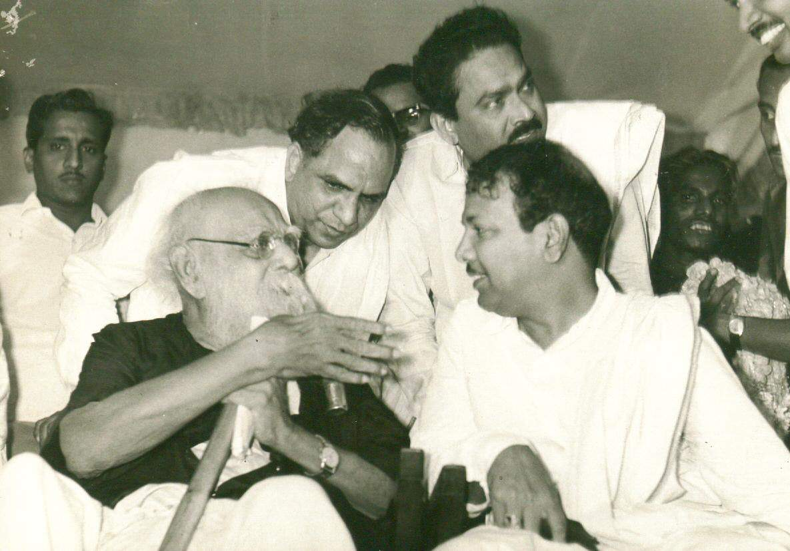

Though two-thirds of my name are derived directly from the Hindu faith, their overall combination is specific to my motherland: Tamil Nadu, India.
According to Hinduism, my first name, Aadhithya, signifies the offspring of a goddess named Aditi. My parents, however, were more interested in the alternate meaning: Lord of the Sun.
Peruvudaiyar Temple in Tamil Nadu, India
Politics

Dravidian Federation Movement
The Rising Sun
Besides being a product of Tamil culture, my name also symbolizes my family's affinity for the Dravidian Progress Federation, a popular rationalist political party whose election symbol is a 'Rising Sun'.
Middle and Last names
Anbu
Love
Ganesan
Lord Vinayagar (otherwise popularly known as the Elephant God)
My middle and last names are derived from Tamil and Sanskrit respectively